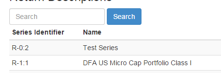

IT Brownbag
Moving Large Datasets
and
Adding Search to Your Apps
Adding Search to Your Apps
Lucene.NET
Problem
Add Fast Search to My App
Problem
Single Search Box

Past Solution
Use SQL 'LIKE'
A Better Solution
Lucene.NET
Lucene.NET
- Port from Java
- Full Text Search
- Is Open Source
Lucene: Pro
Fast and Simple
Lucene: Con
Must have a process that creates an index.
Using Lucene
- Get it from NuGet
- Create an Index
- Execute a Search
- Be Happy